PRIMA DI CREARE ITINERARI, C’ERANO GIÀ I VIAGGI.
Il mio passaporto
Alcuni li ho organizzati da zero, altri li ho scoperti viaggiando.
Tutti hanno lasciato qualcosa nel mio modo di vedere il mondo.

Dove sono stata
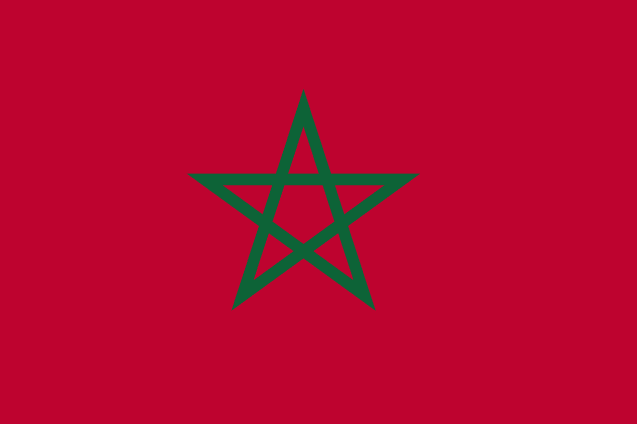
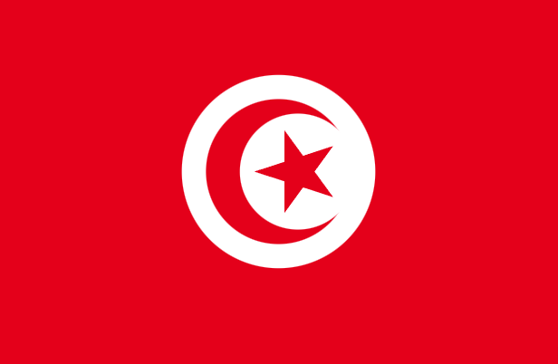
Tunisia
Tunisi
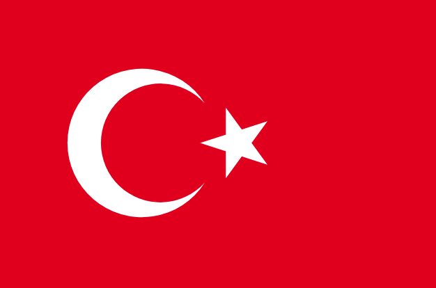
Turchia
Istanbul
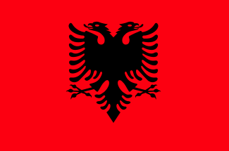
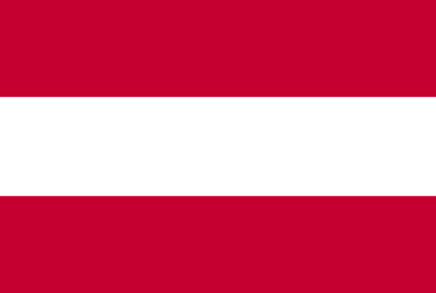
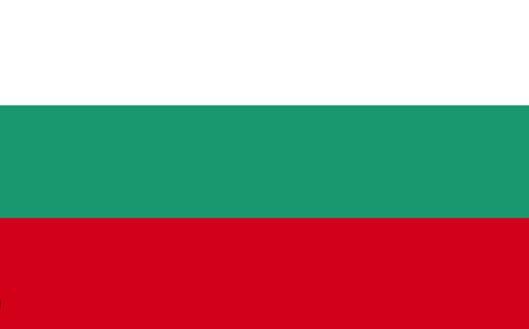
Bulgaria
Sofia
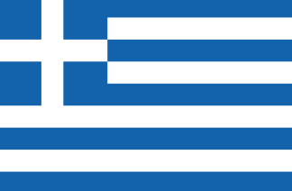
Grecia
Atene
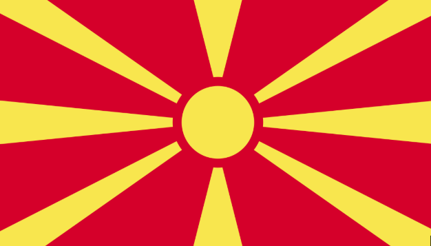
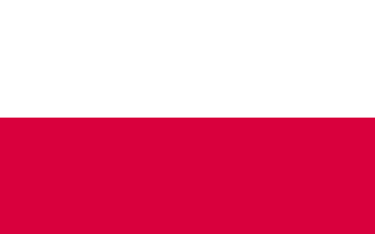
Polonia
Varsavia
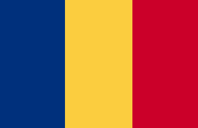
Romania
Bucarest
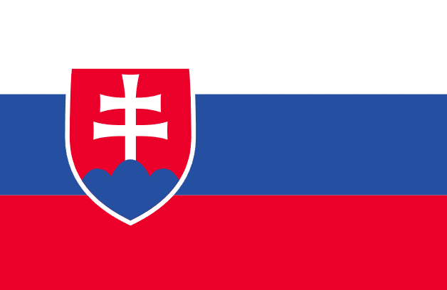
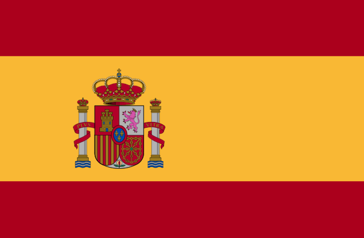
Spagna
Valencia · Barcellona · Ibiza (Dalt Vila)
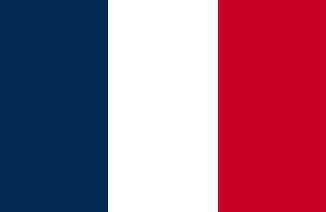
Francia
Nizza
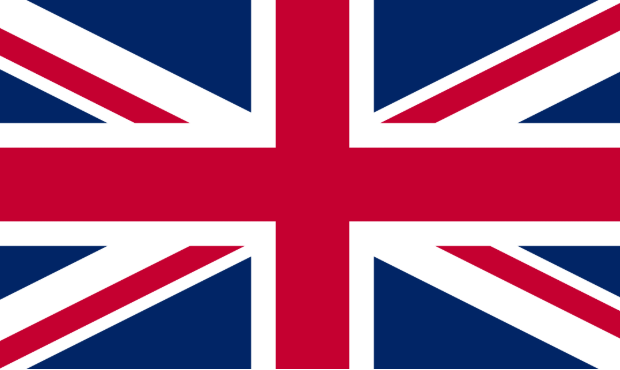
Regno Unito
Londra · Bath · Cheltenham · Stonehenge
 Istanbul
Istanbul
 Valencia
Valencia
Sicilia ♡
Casa, e il posto che conosco meglio.
La mia isola, il punto di partenza di ogni viaggio. Tra borghi, mare, montagne e tradizioni, è il luogo che mi ha insegnato ad amare i dettagli, le persone e la libertà di partire, sempre.

“Ogni viaggio, anche il più semplice, ha contribuito a far crescere la mia curiosità e la voglia di scoprire sempre nuovi posti.”